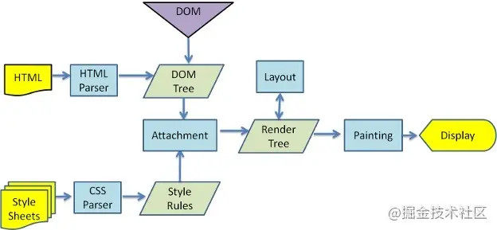
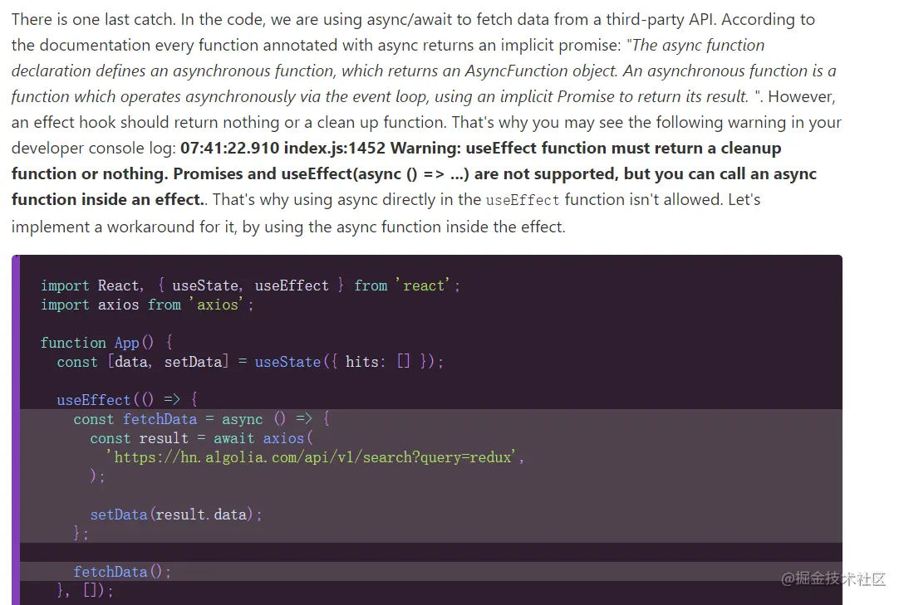

React Hooks 详解 【近 1W 字】+ 项目实战
React Hooks
一、什么是 Hooks
- React 一直都提倡使用_函数组件 ，但是有时候需要使用 state 或者其他一些功能时，只能使用 类组件_，因为函数组件没有实例，没有生命周期函数，只有类组件才有
- Hooks 是 React 16.8 新增的特性，它可以让你在不编写 class 的情况下使用 state 以及其他的 React 特性
- 如果你在编写函数组件并意识到需要向其添加一些 state，以前的做法是必须将其它转化为 class。现在你可以直接在现有的函数组件中使用 Hooks
- 凡是 use 开头的 React API 都是 Hooks
二、Hooks 解决的问题
1. 类组件的不足
-
状态逻辑难复用： 在组件之间复用状态逻辑很难，可能要用到 render props （渲染属性）或者 HOC（高阶组件），但无论是渲染属性，还是高阶组件，都会在原先的组件外包裹一层父容器（一般都是 div 元素），导致层级冗余
-
趋向复杂难以维护：
- 在生命周期函数中混杂不相干的逻辑（如：在
componentDidMount中注册事件以及其他的逻辑，在componentWillUnmount中卸载事件，这样分散不集中的写法，很容易写出 bug ） - 类组件中到处都是对状态的访问和处理，导致组件难以拆分成更小的组件
- 在生命周期函数中混杂不相干的逻辑（如：在
-
this 指向问题
-
父组件给子组件传递函数时，必须绑定 this
-
react 中的组件四种绑定 this 方法的区别
-
class App extends React.Component<any, any> {
handleClick2;
constructor(props) {
super(props);
this.state = {
num: 1,
title: ' react study'
};
this.handleClick2 = this.handleClick1.bind(this);
}
handleClick1() {
this.setState({
num: this.state.num + 1,
})
}
handleClick3 = () => {
this.setState({
num: this.state.num + 1,
})
};
render() {
return (<div>
<h2>Ann, {this.state.num}</h2>
<button onClick={this.handleClick2}>btn1</button>
<button onClick={this.handleClick1.bind(this)}>btn2</button>
<button onClick={() => this.handleClick1()}>btn3</button>
<button onClick={this.handleClick3}>btn4</button>
</div>)
}
}
前提：子组件内部做了性能优化，如（React.PureComponent）
- 第一种是在构造函数中绑定 this：那么每次父组件刷新的时候，如果传递给子组件其他的 props 值不变，那么子组件就不会刷新；
- 第二种是在 render() 函数里面绑定 this：因为 bind 函数会返回一个新的函数，所以每次父组件刷新时，都会重新生成一个函数，即使父组件传递给子组件其他的 props 值不变，子组件每次都会刷新；
- 第三种是使用箭头函数：父组件刷新的时候，即使两个箭头函数的函数体是一样的，都会生成一个新的箭头函数，所以子组件每次都会刷新；
- 第四种是使用类的静态属性：原理和第一种方法差不多，比第一种更简洁
综上所述，如果不注意的话，很容易写成第三种写法，导致性能上有所损耗。
2. Hooks 优势
- 能优化类组件的三大问题
- 能在无需修改组件结构的情况下复用状态逻辑（自定义 Hooks ）
- 能将组件中相互关联的部分拆分成更小的函数（比如设置订阅或请求数据）
- 副作用的关注点分离：副作用指那些没有发生在数据向视图转换过程中的逻辑，如
ajax请求、访问原生dom元素、本地持久化缓存、绑定/解绑事件、添加订阅、设置定时器、记录日志等。以往这些副作用都是写在类组件生命周期函数中的。而useEffect在全部渲染完毕后才会执行，useLayoutEffect会在浏览器layout之后，painting之前执行。
三、注意事项
- 只能在函数内部的最外层调用 Hook，不要在循环、条件判断或者子函数中调用
- 只能在 React 的函数组件中调用 Hook，不要在其他 JavaScript 函数中调用
- https://reactjs.org/warnings/invalid-hook-call-warning.html
四、useState & useMemo & useCallback
-
React 假设当你多次调用 useState 的时候，你能保证每次渲染时它们的调用顺序是不变的。
-
通过在函数组件里调用它来给组件添加一些内部 state，React会 在重复渲染时保留这个 state
-
useState 唯一的参数就是初始 state
-
useState 会返回一个数组
-
一个 state，一个更新 state 的函数
-
在初始化渲染期间，返回的状态 (state) 与传入的第一个参数 (initialState) 值相同
-
-
你可以在事件处理函数中或其他一些地方调用这个函数。它类似 class 组件的 this.setState，但是它不会把新的 state 和旧的 state 进行合并，而是直接替换
// 这里可以任意命名，因为返回的是数组，数组解构
const [state, setState] = useState(initialState);
4.1 使用例子
import React, { useState } from "react";
import ReactDOM from "react-dom";
function Child1(porps) {
console.log(porps);
const { num, handleClick } = porps;
return (
<div
onClick={() => {
handleClick(num + 1);
}}
>
child
</div>
);
}
function Child2(porps) {
// console.log(porps);
const { text, handleClick } = porps;
return (
<div>
child2
<Grandson text={text} handleClick={handleClick} />
</div>
);
}
function Grandson(porps) {
console.log(porps);
const { text, handleClick } = porps;
return (
<div
onClick={() => {
handleClick(text + 1);
}}
>
grandson
</div>
);
}
function Parent() {
let [num, setNum] = useState(0);
let [text, setText] = useState(1);
return (
<div>
<Child1 num={num} handleClick={setNum} />
<Child2 text={text} handleClick={setText} />
</div>
);
}
const rootElement = document.getElementById("root");
ReactDOM.render(<Parent />, rootElement);
4.2 每次渲染都是独立的闭包
- 每一次渲染都有它自己的 Props 和 State
- 每一次渲染都有它自己的事件处理函数
- 当点击更新状态的时候，函数组件都会重新被调用，那么每次渲染都是独立的，取到的值不会受后面操作的影响
function Counter2(){
let [number,setNumber] = useState(0);
function alertNumber(){
setTimeout(()=>{
// alert 只能获取到点击按钮时的那个状态
alert(number);
},3000);
}
return (
<>
<p>{number}</p>
<button onClick={()=>setNumber(number+1)}>+</button>
<button onClick={alertNumber}>alertNumber</button>
</>
)
}
4.3 函数式更新
- 如果新的 state 需要通过使用先前的 state 计算得出，那么可以将回调函数当做参数传递给 setState。该回调函数将接收先前的 state，并返回一个更新后的值。
function Counter(){
let [number,setNumber] = useState(0);
function lazy(){
setTimeout(() => {
// setNumber(number+1);
// 这样每次执行时都会去获取一遍 state，而不是使用点击触发时的那个 state
setNumber(number=>number+1);
}, 3000);
}
return (
<>
<p>{number}</p>
<button onClick={()=>setNumber(number+1)}>+</button>
<button onClick={lazy}>lazy</button>
</>
)
}
4.4 惰性初始化 state
- initialState 参数只会在组件的初始化渲染中起作用，后续渲染时会被忽略
- 如果初始 state 需要通过复杂计算获得，则可以传入一个函数，在函数中计算并返回初始的 state，此函数只在初始渲染时被调用
function Counter5(props){
console.log('Counter5 render');
// 这个函数只在初始渲染时执行一次，后续更新状态重新渲染组件时，该函数就不会再被调用
function getInitState(){
return {number:props.number};
}
let [counter,setCounter] = useState(getInitState);
return (
<>
<p>{counter.number}</p>
<button onClick={()=>setCounter({number:counter.number+1})}>+</button>
<button onClick={()=>setCounter(counter)}>setCounter</button>
</>
)
}
4.5 性能优化
4.5.1 Object.is （浅比较）
- Hook 内部使用 Object.is 来比较新/旧 state 是否相等
- 与 class 组件中的 setState 方法不同，如果你修改状态的时候，传的状态值没有变化，则不重新渲染
- 与 class 组件中的 setState 方法不同，useState 不会自动合并更新对象。你可以用函数式的 setState 结合展开运算符来达到合并更新对象的效果
function Counter(){
const [counter,setCounter] = useState({name:'计数器',number:0});
console.log('render Counter')
// 如果你修改状态的时候，传的状态值没有变化，则不重新渲染
return (
<>
<p>{counter.name}:{counter.number}</p>
<button onClick={()=>setCounter({...counter,number:counter.number+1})}>+</button>
<button onClick={()=>setCounter(counter)}>++</button>
</>
)
}
4.5.2 减少渲染次数
- 默认情况，只要父组件状态变了（不管子组件依不依赖该状态），子组件也会重新渲染
- 一般的优化：
- 类组件：可以使用
pureComponent； - 函数组件：使用
React.memo，将函数组件传递给memo之后，就会返回一个新的组件，新组件的功能：如果接受到的属性不变，则不重新渲染函数；
- 类组件：可以使用
- 但是怎么保证属性不会变尼？这里使用 useState ，每次更新都是独立的，
const [number,setNumber] = useState(0)也就是说每次都会生成一个新的值（哪怕这个值没有变化），即使使用了React.memo，也还是会重新渲染
import React,{useState,memo,useMemo,useCallback} from 'react';
function SubCounter({onClick,data}){
console.log('SubCounter render');
return (
<button onClick={onClick}>{data.number}</button>
)
}
SubCounter = memo(SubCounter);
export default function Counter6(){
console.log('Counter render');
const [name,setName]= useState('计数器');
const [number,setNumber] = useState(0);
const data ={number};
const addClick = ()=>{
setNumber(number+1);
};
return (
<>
<input type="text" value={name} onChange={(e)=>setName(e.target.value)}/>
<SubCounter data={data} onClick={addClick}/>
</>
)
}
- 更深入的优化：
- useCallback：接收一个内联回调函数参数和一个依赖项数组（子组件依赖父组件的状态，即子组件会使用到父组件的值） ，useCallback 会返回该回调函数的 memoized 版本，该回调函数仅在某个依赖项改变时才会更新
- useMemo：把创建函数和依赖项数组作为参数传入
useMemo，它仅会在某个依赖项改变时才重新计算 memoized 值。这种优化有助于避免在每次渲染时都进行高开销的计算
import React,{useState,memo,useMemo,useCallback} from 'react';
function SubCounter({onClick,data}){
console.log('SubCounter render');
return (
<button onClick={onClick}>{data.number}</button>
)
}
SubCounter = memo(SubCounter);
let oldData,oldAddClick;
export default function Counter2(){
console.log('Counter render');
const [name,setName]= useState('计数器');
const [number,setNumber] = useState(0);
// 父组件更新时，这里的变量和函数每次都会重新创建，那么子组件接受到的属性每次都会认为是新的
// 所以子组件也会随之更新，这时候可以用到 useMemo
// 有没有后面的依赖项数组很重要，否则还是会重新渲染
// 如果后面的依赖项数组没有值的话，即使父组件的 number 值改变了，子组件也不会去更新
//const data = useMemo(()=>({number}),[]);
const data = useMemo(()=>({number}),[number]);
console.log('data===oldData ',data===oldData);
oldData = data;
// 有没有后面的依赖项数组很重要，否则还是会重新渲染
const addClick = useCallback(()=>{
setNumber(number+1);
},[number]);
console.log('addClick===oldAddClick ',addClick===oldAddClick);
oldAddClick=addClick;
return (
<>
<input type="text" value={name} onChange={(e)=>setName(e.target.value)}/>
<SubCounter data={data} onClick={addClick}/>
</>
)
}
4.6 useState 源码中的链表实现
import React from 'react';
import ReactDOM from 'react-dom';
let firstWorkInProgressHook = {memoizedState: null, next: null};
let workInProgressHook;
function useState(initState) {
let currentHook = workInProgressHook.next ? workInProgressHook.next : {memoizedState: initState, next: null};
function setState(newState) {
currentHook.memoizedState = newState;
render();
}
// 这就是为什么 useState 书写顺序很重要的原因
// 假如某个 useState 没有执行，会导致指针移动出错，数据存取出错
if (workInProgressHook.next) {
// 这里只有组件刷新的时候，才会进入
// 根据书写顺序来取对应的值
// console.log(workInProgressHook);
workInProgressHook = workInProgressHook.next;
} else {
// 只有在组件初始化加载时，才会进入
// 根据书写顺序，存储对应的数据
// 将 firstWorkInProgressHook 变成一个链表结构
workInProgressHook.next = currentHook;
// 将 workInProgressHook 指向 {memoizedState: initState, next: null}
workInProgressHook = currentHook;
// console.log(firstWorkInProgressHook);
}
return [currentHook.memoizedState, setState];
}
function Counter() {
// 每次组件重新渲染的时候，这里的 useState 都会重新执行
const [name, setName] = useState('计数器');
const [number, setNumber] = useState(0);
return (
<>
<p>{name}:{number}</p>
<button onClick={() => setName('新计数器' + Date.now())}>新计数器</button>
<button onClick={() => setNumber(number + 1)}>+</button>
</>
)
}
function render() {
// 每次重新渲染的时候，都将 workInProgressHook 指向 firstWorkInProgressHook
workInProgressHook = firstWorkInProgressHook;
ReactDOM.render(<Counter/>, document.getElementById('root'));
}
render();
五、useReducer
- useReducer 和 redux 中 reducer 很像
- useState 内部就是靠 useReducer 来实现的
- useState 的替代方案，它接收一个形如 (state, action) => newState 的 reducer，并返回当前的 state 以及与其配套的 dispatch 方法
- 在某些场景下，useReducer 会比 useState 更适用，例如 state 逻辑较复杂且包含多个子值，或者下一个 state 依赖于之前的 state 等
let initialState = 0;
// 如果你希望初始状态是一个{number:0}
// 可以在第三个参数中传递一个这样的函数 ()=>({number:initialState})
// 这个函数是一个惰性初始化函数，可以用来进行复杂的计算，然后返回最终的 initialState
const [state, dispatch] = useReducer(reducer, initialState, init);
const initialState = 0;
function reducer(state, action) {
switch (action.type) {
case 'increment':
return {number: state.number + 1};
case 'decrement':
return {number: state.number - 1};
default:
throw new Error();
}
}
function init(initialState){
return {number:initialState};
}
function Counter(){
const [state, dispatch] = useReducer(reducer, initialState,init);
return (
<>
Count: {state.number}
<button onClick={() => dispatch({type: 'increment'})}>+</button>
<button onClick={() => dispatch({type: 'decrement'})}>-</button>
</>
)
}
六、useContext
- 接收一个 context 对象（React.createContext 的返回值）并返回该 context 的当前值
- 当前的 context 值由上层组件中距离当前组件最近的 <MyContext.Provider> 的 value prop 决定
- 当组件上层最近的 <MyContext.Provider> 更新时，该 Hook 会触发重渲染，并使用最新传递给 MyContext provider 的 context value 值
- useContext(MyContext) 相当于 class 组件中的
static contextType = MyContext或者<MyContext.Consumer> - useContext(MyContext) 只是让你能够读取 context 的值以及订阅 context 的变化。你仍然需要在上层组件树中使用 来为下层组件提供 context
import React,{useState,memo,useMemo,useCallback,useReducer,createContext,useContext} from 'react';
import ReactDOM from 'react-dom';
const initialState = 0;
function reducer(state=initialState,action){
switch(action.type){
case 'ADD':
return {number:state.number+1};
default:
break;
}
}
const CounterContext = createContext();
// 第一种获取 CounterContext 方法：不使用 hook
function SubCounter_one(){
return (
<CounterContext.Consumer>
{
value=>(
<>
<p>{value.state.number}</p>
<button onClick={()=>value.dispatch({type:'ADD'})}>+</button>
</>
)
}
</CounterContext.Consumer>
)
}
// 第二种获取 CounterContext 方法：使用 hook ，更简洁
function SubCounter(){
const {state, dispatch} = useContext(CounterContext);
return (
<>
<p>{state.number}</p>
<button onClick={()=>dispatch({type:'ADD'})}>+</button>
</>
)
}
/* class SubCounter extends React.Component{
static contextTypes = CounterContext
this.context = {state, dispatch}
} */
function Counter(){
const [state, dispatch] = useReducer((reducer), initialState, ()=>({number:initialState}));
return (
<CounterContext.Provider value={{state, dispatch}}>
<SubCounter/>
</CounterContext.Provider>
)
}
ReactDOM.render(<Counter />, document.getElementById('root'));
七、useEffect
- effect（副作用）：指那些没有发生在数据向视图转换过程中的逻辑，如
ajax请求、访问原生dom元素、本地持久化缓存、绑定/解绑事件、添加订阅、设置定时器、记录日志等。 - 副作用操作可以分两类：需要清除的和不需要清除的。
- 原先在函数组件内（这里指在 React 渲染阶段）改变 dom 、发送 ajax 请求以及执行其他包含副作用的操作都是不被允许的，因为这可能会产生莫名其妙的 bug 并破坏 UI 的一致性
- useEffect 就是一个 Effect Hook，给函数组件增加了操作副作用的能力。它跟 class 组件中的
componentDidMount、componentDidUpdate和componentWillUnmount具有相同的用途，只不过被合并成了一个 API - useEffect 接收一个函数，该函数会在组件渲染到屏幕之后才执行，该函数有要求：要么返回一个能清除副作用的函数，要么就不返回任何内容
- 与
componentDidMount或componentDidUpdate不同，使用 useEffect 调度的 effect 不会阻塞浏览器更新屏幕，这让你的应用看起来响应更快。大多数情况下，effect 不需要同步地执行。在个别情况下（例如测量布局），有单独的 useLayoutEffect Hook 供你使用，其 API 与 useEffect 相同。
7.1 使用 class 组件实现修改标题
- 在这个 class 中，我们需要在两个生命周期函数中编写重复的代码，这是因为很多情况下，我们希望在组件加载和更新时执行同样的操作。我们希望它在每次渲染之后执行，但 React 的 class 组件没有提供这样的方法。即使我们提取出一个方法，我们还是要在两个地方调用它。而 useEffect 会在第一次渲染之后和每次更新之后都会执行
class Counter extends React.Component{
state = {number:0};
add = ()=>{
this.setState({number:this.state.number+1});
};
componentDidMount(){
this.changeTitle();
}
componentDidUpdate(){
this.changeTitle();
}
changeTitle = ()=>{
document.title = `你已经点击了${this.state.number}次`;
};
render(){
return (
<>
<p>{this.state.number}</p>
<button onClick={this.add}>+</button>
</>
)
}
}
7.2 使用 useEffect 来实现修改标题
- 每次我们重新渲染，都会生成新的 effect，替换掉之前的。某种意义上讲，effect 更像是渲染结果的一部分 —— 每个 effect 属于一次特定的渲染。
import React,{Component,useState,useEffect} from 'react';
import ReactDOM from 'react-dom';
function Counter(){
const [number,setNumber] = useState(0);
// useEffect里面的这个函数会在第一次渲染之后和更新完成后执行
// 相当于 componentDidMount 和 componentDidUpdate:
useEffect(() => {
document.title = `你点击了${number}次`;
});
return (
<>
<p>{number}</p>
<button onClick={()=>setNumber(number+1)}>+</button>
</>
)
}
ReactDOM.render(<Counter />, document.getElementById('root'));
7.3 清除副作用
- 副作用函数还可以通过返回一个函数来指定如何清除副作用，为防止内存泄漏，清除函数会在组件卸载前执行。如果组件多次渲染，则在执行下一个 effect 之前，上一个 effect 就已被清除。
function Counter(){
let [number,setNumber] = useState(0);
let [text,setText] = useState('');
// 相当于componentDidMount 和 componentDidUpdate
useEffect(()=>{
console.log('开启一个新的定时器')
let $timer = setInterval(()=>{
setNumber(number=>number+1);
},1000);
// useEffect 如果返回一个函数的话，该函数会在组件卸载和更新时调用
// useEffect 在执行副作用函数之前，会先调用上一次返回的函数
// 如果要清除副作用，要么返回一个清除副作用的函数
/* return ()=>{
console.log('destroy effect');
clearInterval($timer);
} */
});
// },[]);//要么在这里传入一个空的依赖项数组，这样就不会去重复执行
return (
<>
<input value={text} onChange={(event)=>setText(event.target.value)}/>
<p>{number}</p>
<button>+</button>
</>
)
}
7.4 跳过 effect 进行性能优化
- 依赖项数组控制着 useEffect 的执行
- 如果某些特定值在两次重渲染之间没有发生变化，你可以通知 React 跳过对 effect 的调用，只要传递数组作为 useEffect 的第二个可选参数即可
- 如果想执行只运行一次的 effect（仅在组件挂载和卸载时执行），可以传递一个空数组（[]）作为第二个参数。这就告诉 React 你的 effect 不依赖于 props 或 state 中的任何值，所以它永远都不需要重复执行
- 推荐启用 eslint-plugin-react-hooks 中的 exhaustive-deps 规则。此规则会在添加错误依赖时发出警告并给出修复建议。
function Counter(){
let [number,setNumber] = useState(0);
let [text,setText] = useState('');
// 相当于componentDidMount 和 componentDidUpdate
useEffect(()=>{
console.log('useEffect');
let $timer = setInterval(()=>{
setNumber(number=>number+1);
},1000);
},[text]);// 数组表示 effect 依赖的变量，只有当这个变量发生改变之后才会重新执行 efffect 函数
return (
<>
<input value={text} onChange={(event)=>setText(event.target.value)}/>
<p>{number}</p>
<button>+</button>
</>
)
}
7.5 使用多个 Effect 实现关注点分离
- 使用 Hook 其中一个目的就是要解决 class 中生命周期函数经常包含不相关的逻辑，但又把相关逻辑分离到了几个不同方法中的问题。
// 类组件版
class FriendStatusWithCounter extends React.Component {
constructor(props) {
super(props);
this.state = { count: 0, isOnline: null };
this.handleStatusChange = this.handleStatusChange.bind(this);
}
componentDidMount() {
document.title = `You clicked ${this.state.count} times`;
ChatAPI.subscribeToFriendStatus(
this.props.friend.id,
this.handleStatusChange
);
}
componentDidUpdate() {
document.title = `You clicked ${this.state.count} times`;
}
componentWillUnmount() {
ChatAPI.unsubscribeFromFriendStatus(
this.props.friend.id,
this.handleStatusChange
);
}
handleStatusChange(status) {
this.setState({
isOnline: status.isOnline
});
}
// ...
- 可以发现设置
document.title的逻辑是如何被分割到componentDidMount和componentDidUpdate中的，订阅逻辑又是如何被分割到componentDidMount和componentWillUnmount中的。而且componentDidMount中同时包含了两个不同功能的代码。这样会使得生命周期函数很混乱。 - Hook 允许我们按照代码的用途分离他们， 而不是像生命周期函数那样。React 将按照 effect 声明的顺序依次调用组件中的 每一个 effect。
// Hooks 版
function FriendStatusWithCounter(props) {
const [count, setCount] = useState(0);
useEffect(() => {
document.title = `You clicked ${count} times`;
});
const [isOnline, setIsOnline] = useState(null);
useEffect(() => {
function handleStatusChange(status) {
setIsOnline(status.isOnline);
}
ChatAPI.subscribeToFriendStatus(props.friend.id, handleStatusChange);
return () => {
ChatAPI.unsubscribeFromFriendStatus(props.friend.id, handleStatusChange);
};
});
// ...
}
八、useLayoutEffect

- useEffect 在全部渲染完毕后才会执行
- useLayoutEffect 会在 浏览器 layout 之后，painting 之前执行
- 其函数签名与 useEffect 相同，但它会在所有的 DOM 变更之后同步调用 effect
- 可以使用它来读取 DOM 布局并同步触发重渲染
- 在浏览器执行绘制之前 useLayoutEffect 内部的更新计划将被同步刷新
- 尽可能使用标准的 useEffect 以避免阻塞视图更新
function LayoutEffect() {
const [color, setColor] = useState('red');
useLayoutEffect(() => {
alert(color);
});
useEffect(() => {
console.log('color', color);
});
return (
<>
<div id="myDiv" style={{ background: color }}>颜色</div>
<button onClick={() => setColor('red')}>红</button>
<button onClick={() => setColor('yellow')}>黄</button>
<button onClick={() => setColor('blue')}>蓝</button>
</>
);
}
九、useRef & useImperativeHandle
8.1 useRef
- 类组件、React 元素用 React.createRef，函数组件使用 useRef
- useRef 返回一个可变的 ref 对象，其
current属性被初始化为传入的参数（initialValue）
const refContainer = useRef(initialValue);
- useRef 返回的 ref 对象在组件的整个生命周期内保持不变，也就是说每次重新渲染函数组件时，返回的ref 对象都是同一个（使用 React.createRef ，每次重新渲染组件都会重新创建 ref）
import React, { useState, useEffect, useRef } from 'react';
import ReactDOM from 'react-dom';
function Parent() {
let [number, setNumber] = useState(0);
return (
<>
<Child />
<button onClick={() => setNumber({ number: number + 1 })}>+</button>
</>
)
}
let input;
function Child() {
const inputRef = useRef();
console.log('input===inputRef', input === inputRef);
input = inputRef;
function getFocus() {
inputRef.current.focus();
}
return (
<>
<input type="text" ref={inputRef} />
<button onClick={getFocus}>获得焦点</button>
</>
)
}
ReactDOM.render(<Parent />, document.getElementById('root'));
8.2 forwardRef
- 因为函数组件没有实例，所以函数组件无法像类组件一样可以接收 ref 属性
function Parent() {
return (
<>
// <Child ref={xxx} /> 这样是不行的
<Child />
<button>+</button>
</>
)
}
- forwardRef 可以在父组件中操作子组件的 ref 对象
- forwardRef 可以将父组件中的 ref 对象转发到子组件中的 dom 元素上
- 子组件接受 props 和 ref 作为参数
function Child(props,ref){
return (
<input type="text" ref={ref}/>
)
}
Child = React.forwardRef(Child);
function Parent(){
let [number,setNumber] = useState(0);
// 在使用类组件的时候，创建 ref 返回一个对象，该对象的 current 属性值为空
// 只有当它被赋给某个元素的 ref 属性时，才会有值
// 所以父组件（类组件）创建一个 ref 对象，然后传递给子组件（类组件），子组件内部有元素使用了
// 那么父组件就可以操作子组件中的某个元素
// 但是函数组件无法接收 ref 属性 <Child ref={xxx} /> 这样是不行的
// 所以就需要用到 forwardRef 进行转发
const inputRef = useRef();//{current:''}
function getFocus(){
inputRef.current.value = 'focus';
inputRef.current.focus();
}
return (
<>
<Child ref={inputRef}/>
<button onClick={()=>setNumber({number:number+1})}>+</button>
<button onClick={getFocus}>获得焦点</button>
</>
)
}
8.3 useImperativeHandle
useImperativeHandle可以让你在使用 ref 时，自定义暴露给父组件的实例值，不能让父组件想干嘛就干嘛- 在大多数情况下，应当避免使用 ref 这样的命令式代码。useImperativeHandle 应当与 forwardRef 一起使用
- 父组件可以使用操作子组件中的多个 ref
import React,{useState,useEffect,createRef,useRef,forwardRef,useImperativeHandle} from 'react';
function Child(props,parentRef){
// 子组件内部自己创建 ref
let focusRef = useRef();
let inputRef = useRef();
useImperativeHandle(parentRef,()=>(
// 这个函数会返回一个对象
// 该对象会作为父组件 current 属性的值
// 通过这种方式，父组件可以使用操作子组件中的多个 ref
return {
focusRef,
inputRef,
name:'计数器',
focus(){
focusRef.current.focus();
},
changeText(text){
inputRef.current.value = text;
}
}
});
return (
<>
<input ref={focusRef}/>
<input ref={inputRef}/>
</>
)
}
Child = forwardRef(Child);
function Parent(){
const parentRef = useRef();//{current:''}
function getFocus(){
parentRef.current.focus();
// 因为子组件中没有定义这个属性，实现了保护，所以这里的代码无效
parentRef.current.addNumber(666);
parentRef.current.changeText('<script>alert(1)</script>');
console.log(parentRef.current.name);
}
return (
<>
<ForwardChild ref={parentRef}/>
<button onClick={getFocus}>获得焦点</button>
</>
)
}
十、自定义 Hook
- 自定义 Hook 更像是一种约定，而不是一种功能。如果函数的名字以 use 开头，并且调用了其他的 Hook，则就称其为一个自定义 Hook
- 有时候我们会想要在组件之间重用一些状态逻辑，之前要么用 render props ，要么用高阶组件，要么使用 redux
- 自定义 Hook 可以让你在不增加组件的情况下达到同样的目的
- Hook 是一种复用状态逻辑的方式，它不复用 state 本身
- 事实上 Hook 的每次调用都有一个完全独立的 state
import React, { useLayoutEffect, useEffect, useState } from 'react';
import ReactDOM from 'react-dom';
function useNumber(){
let [number,setNumber] = useState(0);
useEffect(()=>{
setInterval(()=>{
setNumber(number=>number+1);
},1000);
},[]);
return [number,setNumber];
}
// 每个组件调用同一个 hook，只是复用 hook 的状态逻辑，并不会共用一个状态
function Counter1(){
let [number,setNumber] = useNumber();
return (
<div><button onClick={()=>{
setNumber(number+1)
}}>{number}</button></div>
)
}
function Counter2(){
let [number,setNumber] = useNumber();
return (
<div><button onClick={()=>{
setNumber(number+1)
}}>{number}</button></div>
)
}
ReactDOM.render(<><Counter1 /><Counter2 /></>, document.getElementById('root'));
十一、常见问题
1. 使用 eslint-plugin-react-hooks 来检查代码错误，给出提示
{
"plugins": ["react-hooks"],
// ...
"rules": {
"react-hooks/rules-of-hooks": 'error',// 检查 Hook 的规则
"react-hooks/exhaustive-deps": 'warn' // 检查 effect 的依赖
}
}
2.为什么每次更新的时候都要运行 Effect
react.docschina.org/docs/hooks-…
3.为什么必须在组件的顶层使用 Hook & 在单个组件中使用多个 State Hook 或 Effect Hook，那么 React 怎么知道哪个 state 对应哪个 useState？
- React 依赖于 Hook 的调用顺序，如果能确保 Hook 在每一次渲染中都按照同样的顺序被调用。那么React 能够在多次的
useState和useEffect调用之间保持 hook 状态的正确性
function Form() {
// 1. Use the name state variable
const [name, setName] = useState('Mary');
// 2. Use an effect for persisting the form
useEffect(function persistForm() {
localStorage.setItem('formData', name);
});
// 3. Use the surname state variable
const [surname, setSurname] = useState('Poppins');
// 4. Use an effect for updating the title
useEffect(function updateTitle() {
document.title = name + ' ' + surname;
});
// ...
}
// ------------
// 首次渲染
// ------------
useState('Mary') // 1. 使用 'Mary' 初始化变量名为 name 的 state
useEffect(persistForm) // 2. 添加 effect 以保存 form 操作
useState('Poppins') // 3. 使用 'Poppins' 初始化变量名为 surname 的 state
useEffect(updateTitle) // 4. 添加 effect 以更新标题
// -------------
// 二次渲染
// -------------
useState('Mary') // 1. 读取变量名为 name 的 state（参数被忽略）
useEffect(persistForm) // 2. 替换保存 form 的 effect
useState('Poppins') // 3. 读取变量名为 surname 的 state（参数被忽略）
useEffect(updateTitle) // 4. 替换更新标题的 effect
// ...
只要 Hook 的调用顺序在多次渲染之间保持一致，React 就能正确地将内部 state 和对应的 Hook 进行关联。但如果我们将一个 Hook (例如 persistForm
effect) 调用放到一个条件语句中会发生什么呢？
// 🔴 在条件语句中使用 Hook 违反第一条规则
if (name !== '') {
useEffect(function persistForm() {
localStorage.setItem('formData', name);
});
}
在第一次渲染中 name !== '' 这个条件值为 true，所以我们会执行这个 Hook。但是下一次渲染时我们可能清空了表单，表达式值变为 false。此时的渲染会跳过该
Hook，Hook 的调用顺序发生了改变：
useState('Mary') // 1. 读取变量名为 name 的 state（参数被忽略）
// useEffect(persistForm) // 🔴 此 Hook 被忽略！
useState('Poppins') // 🔴 2 （之前为 3）。读取变量名为 surname 的 state 失败
useEffect(updateTitle) // 🔴 3 （之前为 4）。替换更新标题的 effect 失败
React 不知道第二个 useState 的 Hook 应该返回什么。React 会以为在该组件中第二个 Hook 的调用像上次的渲染一样，对应得是 persistForm 的
effect，但并非如此。从这里开始，后面的 Hook 调用都被提前执行，导致 bug 的产生。
如果我们想要有条件地执行一个 effect，可以将判断放到 Hook 的_内部_：
useEffect(function persistForm() {
// 👍 将条件判断放置在 effect 中
if (name !== '') {
localStorage.setItem('formData', name);
}
});
4. 自定义 Hook 必须以 use 开头吗？
必须如此。这个约定非常重要。不遵循的话，由于无法判断某个函数是否包含对其内部 Hook 的调用，React 将无法自动检查你的 Hook 是否违反了 Hook 的规则。
5. 在两个组件中使用相同的 Hook 会共享 state 吗？
不会。自定义 Hook 是一种重用_状态逻辑_的机制(例如设置为订阅并存储当前值)，所以每次使用自定义 Hook 时，其中的所有 state 和副作用都是完全隔离的。
6. 在一个组件中多次调用 useState 或者 useEffect，每次调用 Hook，它都会获取独立的 state，是完全独立的
7. 当组件拥有多个 state 时，应该把多个 state 合并成一个 state ，还是把 state 切分成多个 state 变量？
react.docschina.org/docs/hooks-…
- 要么把所有 state 都放在同一个
useState调用中，要么每一个字段都对应一个useState调用，这两方式都能跑通。 - 当你在这两个极端之间找到平衡，然后把相关 state 组合到几个独立的 state 变量时，组件就会更加的可读。如果 state 的逻辑开始变得复杂，我们推荐用
useReducer来管理它，或使用自定义 Hook。
8. 可以只在更新时运行 effect 吗？
这是个比较罕见的使用场景。如果你需要的话，你可以 使用一个可变的 ref 手动存储一个布尔值来表示是首次渲染还是后续渲染，然后在你的 effect 中检查这个标识。（如果你发现自己经常在这么做，你可以为之创建一个自定义 Hook。）
9. 在 useEffect 中调用用函数时，要把该函数在 useEffect 中申明，不能放到外部申明，然后再在 useEffect 中调用
react.docschina.org/docs/hooks-…
function Example({ someProp }) {
function doSomething() {
console.log(someProp);
}
useEffect(() => {
doSomething();
}, []); // 🔴 这样不安全（它调用的 `doSomething` 函数使用了 `someProp`）
}
要记住 effect 外部的函数使用了哪些 props 和 state 很难。这也是为什么 通常你会想要在 effect 内部 去声明它所需要的函数。 这样就能容易的看出那个 effect 依赖了组件作用域中的哪些值：
function Example({ someProp }) {
useEffect(() => {
function doSomething() {
console.log(someProp);
}
doSomething();
}, [someProp]); // ✅ 安全（我们的 effect 仅用到了 `someProp`）
}
只有 当函数（以及它所调用的函数）不引用 props、state 以及由它们衍生而来的值时，你才能放心地把它们从依赖列表中省略。下面这个案例有一个 Bug：
function ProductPage({ productId }) {
const [product, setProduct] = useState(null);
async function fetchProduct() {
const response = await fetch('http://myapi/product' + productId); // 使用了 productId prop
const json = await response.json();
setProduct(json);
}
useEffect(() => {
fetchProduct();
}, []); // 🔴 这样是无效的，因为 `fetchProduct` 使用了 `productId`
// ...
}
推荐的修复方案是把那个函数移动到你的 effect 内部。这样就能很容易的看出来你的 effect 使用了哪些 props 和 state，并确保它们都被声明了：
function ProductPage({ productId }) {
const [product, setProduct] = useState(null);
useEffect(() => {
// 把这个函数移动到 effect 内部后，我们可以清楚地看到它用到的值。
async function fetchProduct() {
const response = await fetch('http://myapi/product' + productId);
const json = await response.json();
setProduct(json);
}
fetchProduct();
}, [productId]); // ✅ 有效，因为我们的 effect 只用到了 productId
// ...
}
10. 如何在 Hooks 中优雅的 Fetch Data
www.robinwieruch.de/react-hooks…
import React, { useState, useEffect } from 'react';
import axios from 'axios';
function App() {
const [data, setData] = useState({ hits: [] });
// 注意 async 的位置
// 这种写法，虽然可以运行，但是会发出警告
// 每个带有 async 修饰的函数都返回一个隐含的 promise
// 但是 useEffect 函数有要求：要么返回清除副作用函数，要么就不返回任何内容
useEffect(async () => {
const result = await axios(
'https://hn.algolia.com/api/v1/search?query=redux',
);
setData(result.data);
}, []);
return (
<ul>
{data.hits.map(item => (
<li key={item.objectID}>
<a href={item.url}>{item.title}</a>
</li>
))}
</ul>
);
}
export default App;
import React, { useState, useEffect } from 'react';
import axios from 'axios';
function App() {
const [data, setData] = useState({ hits: [] });
useEffect(() => {
// 更优雅的方式
const fetchData = async () => {
const result = await axios(
'https://hn.algolia.com/api/v1/search?query=redux',
);
setData(result.data);
};
fetchData();
}, []);
return (
<ul>
{data.hits.map(item => (
<li key={item.objectID}>
<a href={item.url}>{item.title}</a>
</li>
))}
</ul>
);
}
export default App;
11. 不要过度依赖 useMemo
-
useMemo本身也有开销。useMemo会「记住」一些值，同时在后续 render 时，将依赖数组中的值取出来和上一次记录的值进行比较，如果不相等才会重新执行回调函数，否则直接返回「记住」的值。这个过程本身就会消耗一定的内存和计算资源。因此，过度使用useMemo可能会影响程序的性能。 -
在使用
useMemo前，应该先思考三个问题：- 传递给
useMemo的函数开销大不大？ 有些计算开销很大，我们就需要「记住」它的返回值，避免每次 render 都去重新计算。如果你执行的操作开销不大，那么就不需要记住返回值。否则，使用useMemo本身的开销就可能超过重新计算这个值的开销。因此，对于一些简单的 JS 运算来说，我们不需要使用useMemo来「记住」它的返回值。 - 返回的值是原始值吗？ 如果计算出来的是基本类型的值（
string、boolean、null、undefined、number、symbol），那么每次比较都是相等的，下游组件就不会重新渲染；如果计算出来的是复杂类型的值（object、array），哪怕值不变，但是地址会发生变化，导致下游组件重新渲染。所以我们也需要「记住」这个值。 - 在编写自定义 Hook 时，返回值一定要保持引用的一致性。 因为你无法确定外部要如何使用它的返回值。如果返回值被用做其他 Hook 的依赖，并且每次 re-render
时引用不一致（当值相等的情况），就可能会产生 bug。所以如果自定义 Hook 中暴露出来的值是 object、array、函数等，都应该使用
useMemo。以确保当值相同时，引用不发生变化。
- 传递给
12. useEffect 不能接收 async 作为回调函数
useEffect 接收的函数，要么返回一个能清除副作用的函数，要么就不返回任何内容。而 async 返回的是 promise。
www.robinwieruch.de/react-hooks…

十二、项目实战
十三、参考
从 Preact 中了解 React 组件和 hooks 基本原理表
2019年了，整理了N个实用案例帮你快速迁移到React Hooks